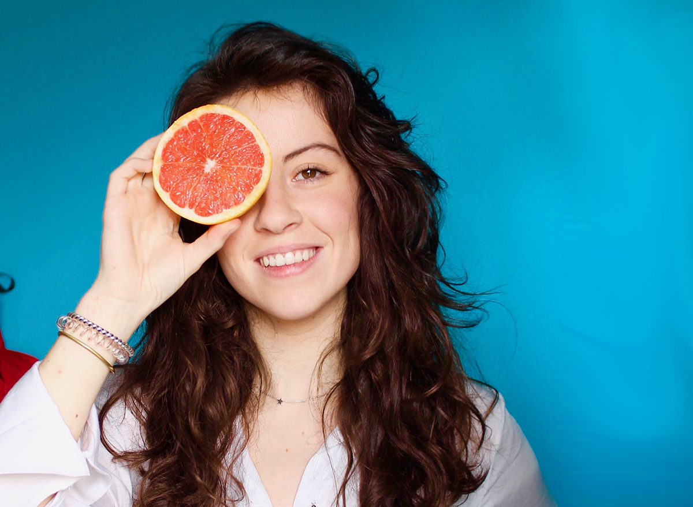
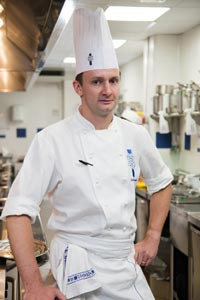

Target Audiencie
The target audience is a group of companies that relate to each other, seeking to sell goods of natural origin to the public, and that have the common goal of caring for the environment. These companies will have a common website for the sale of their products. These are small entrepreneurs.
Caroline is a recently graduated nutritionist, who was unaware of the great impact of the new trends that were developing in her community. A great emergence of sustainable, organic, vegan, and environmentally friendly products made her reflect on how she could combine her knowledge and give the community a service designed with her needs in mind. Thus came the idea of creating a business with all kinds of natural products and as a nutritionist guide customers to better eating habits. Carolina is 25 years old, and she seeks in The Green World to associate with entrepreneurs who seek to spread the ideas of healthy eating habits in the community, through awareness campaigns.

Steven is 46 years old, a chef, and has opened a vegan restaurant. He has the idea of joining The Green World, because as a member, he can grow his business by participating in social events where he can serve his exquisite dishes and attract the most demanding public to his tables.
